The objective of this lab is to run a die stress analysis. When the stress analysis is being done on only one tool, a one step simulation is sufficient to get accurate stresses. When the stress analysis is being done on die assemblies where there is interaction between the tools, more than one step is typically needed for the die stack to come to a state of equilibrium under the applied load.
In a typical die stress simulation, the workpiece is removed and the forces exerted onto the dies by the workpiece are interpolated onto the tools.
Open Previously simulated Gear.moproj file in DEFORM MO by clicking on  . MO pre- processor will open.
. MO pre- processor will open.
At top Left corner of the Display window, Left mouse click on  button and select Add Die stress Study operation as shown in Fig. L12.1.
button and select Add Die stress Study operation as shown in Fig. L12.1.
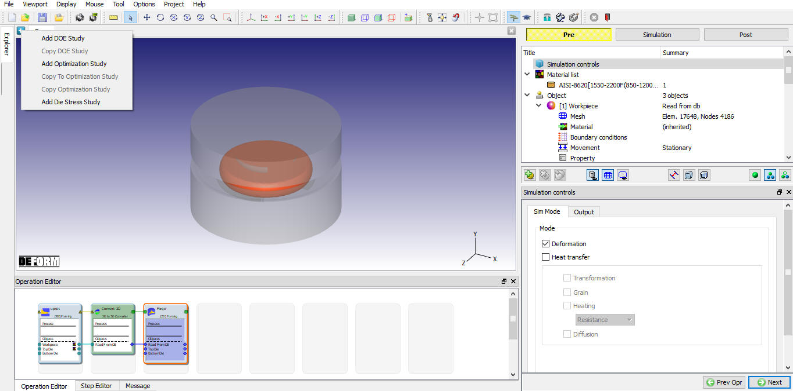
Adding Die stress Study
To perform Die stress operation,select last step in Step selection page as shown in Fig. L12.2. Click  .
.
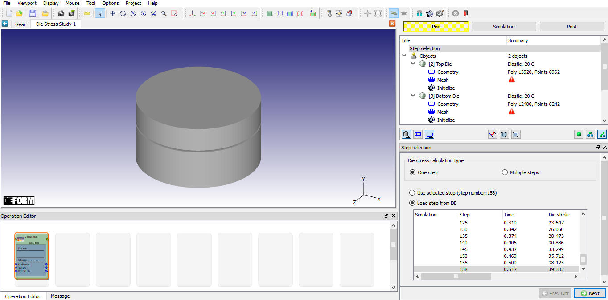
Step selection for Die stress study
Click  for objects page as no additional objects required.
for objects page as no additional objects required.
Assign Top Die Temperature as 148.89°C. By default, object type of rigid objects from the loaded step will be changed to elastic. Keep the object type as elastic for the Punch object. From v13.1.1, two new options have been introduced in the object page to position the dies in future steps for Multiple steps die stress analysis, we need not use these options for single step die stress analysis, hence, keep the Need positioning check box turned off as shown in Fig. L12.3.
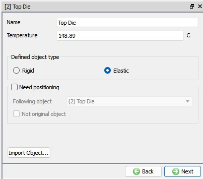
Top Die window
In Mesh page, Enter target number of mesh elements as 40000, then click on button as shown in Fig. L12.4. to generate mesh.
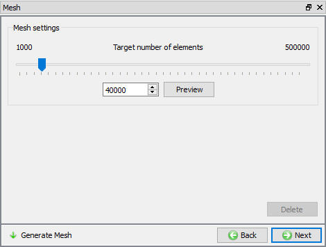
Mesh window
In Force interpolation page, click on action label to interpolate forces as shown in Fig. L12.5. Click  .
.
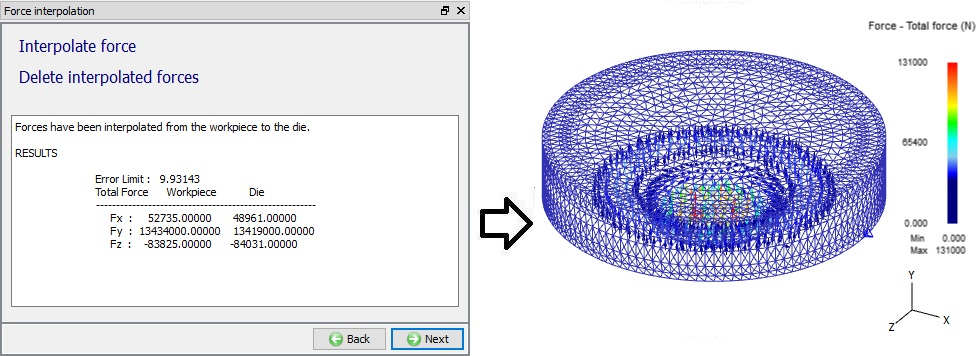
Force interpolation of Top Die
In material window, assign AISI-H-13 material from material library and Click  .
.
Assign Vx=Vy=Vz=0 Velocity boundary condition on the top surface of the Top Die. This boundary condition prevents the die from flying off when the forces are applied. (See Fig. L12.6.)
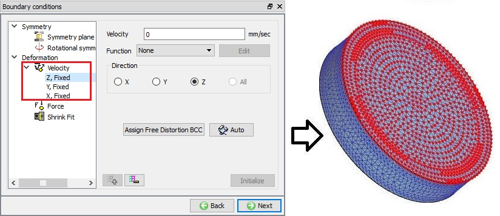
Boundary Conditions window
Select Bottom die from operation tree to define Bottom die object and its properties as there is no more variables to be initialized for Top die.
Assign Temperature of Bottom Die as 148.89°C. We will keep the object type as Elastic for the Bottom Die and turn off Need positioning check box as shown in Fig. L12.7.
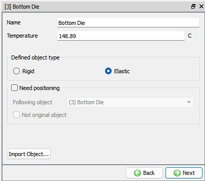
Bottom Die Window
In Mesh page, Enter target number of mesh elements as 50000, then click on button as shown in Fig. L12.8. to generare mesh.
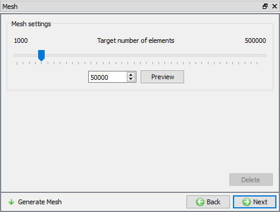
Mesh window
In Force interpolation page, click on action label to interpolate forces as shown in Fig. L12.9. Click  .
.
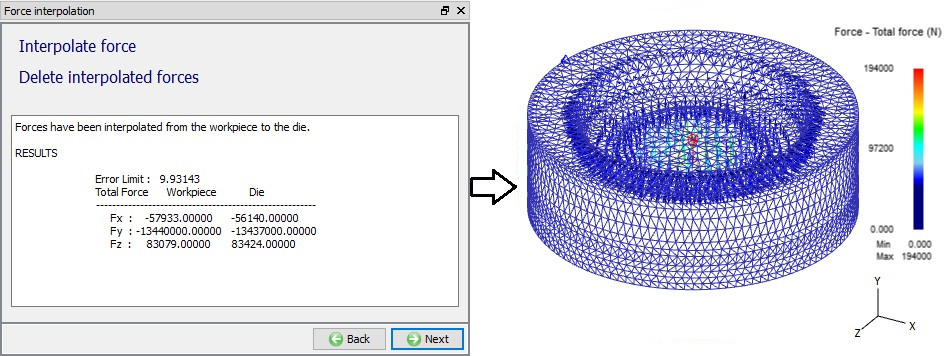
Force Interpolation Window
In material window, select AISI-H-13 material and assign it to the bottom die and Click  .
.
Assign Vx=Vy=Vz=0 Velocity boundary condition on the Bottom surface of the Bottom Die. (See Fig. L12.10.)
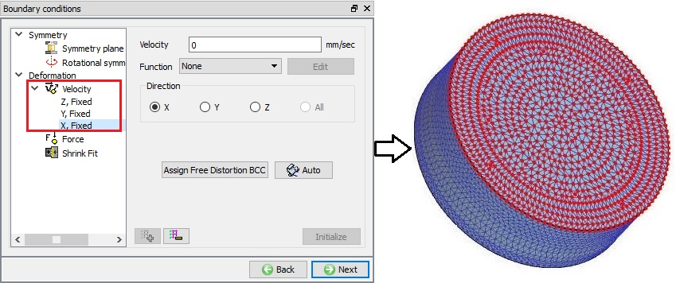
Assigning BCC for Bottom Die
Click on Simulation Controls branch in operation tree, as we need not to initialize variables and the setup does not require positioning or contact generation.
Set Number of Simulation Steps to 1 and the Step Increment to Save to 1. Set the Max. elapsed process time per step as 1 sec. (See Fig. L12.11.)
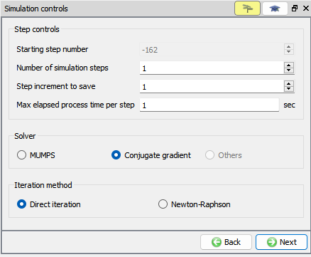
Simulation Controls window
By selecting the File menu Export option, Save a keyword file for the problem as "Diestress".
Click on  action label and check for any issues in setup. Generate a database by clicking
action label and check for any issues in setup. Generate a database by clicking  action label.
action label.
Once the database has been generated switch to the Simulation mode by selecting the  button above the object tree. Click on the
button above the object tree. Click on the  action label to open the Run Options dialog. Use the default Continue Run option to select “Continue from the last step” option and then select the Simulation mode as Interactive and click on
action label to open the Run Options dialog. Use the default Continue Run option to select “Continue from the last step” option and then select the Simulation mode as Interactive and click on  button to run the simulation.
button to run the simulation.
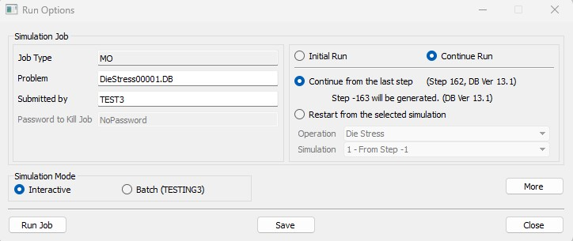
Run Simulation popup window
After completing simulation click on  MO Mode button to review results.
MO Mode button to review results.
Using the (State Variables) option, plot Effective stress and Max Principal stress, two of the most important variables in die stress simulations. (See Fig. L12.13. and Fig. L12.14.)
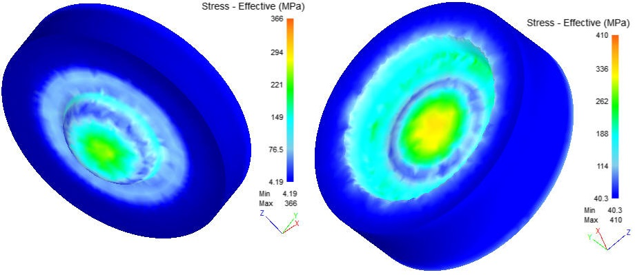
Stress Effective contour plot; (a) For Top Die (b) For Bottom Die
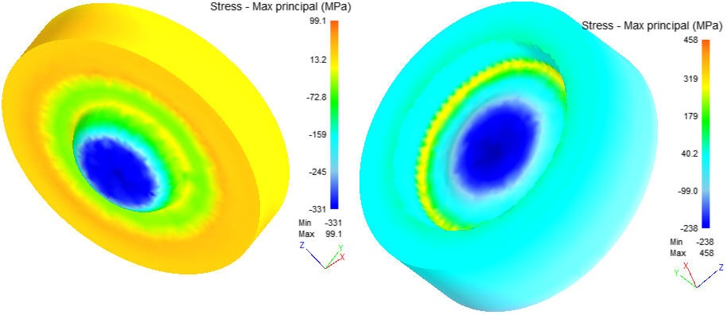
Stress Max principal contour plot; (a) For Top Die (b) For Bottom Die
- Open Project “Gear” in DEFORM MO from DEFORM GUI Main.
- Add 2nd Die stress study and add Die Stress operation as shown in Lab 12: 12.1 Add Die Stress Study.
- Keep the selected last step, click  and add an additional object from objects window (see Fig. L12.15.).
and add an additional object from objects window (see Fig. L12.15.).
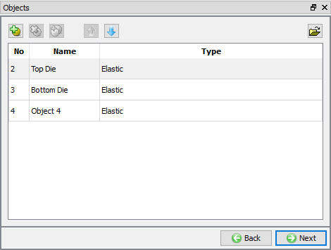
Added additional object
- Continue Top and Bottom die setup as per Lab 12 until section 12.11.
Define Case general data
- Rename additional Object 3 to case and confirm the object temperature is set to 20°C. We will select object type as elastic and turn off Need positioning check box.
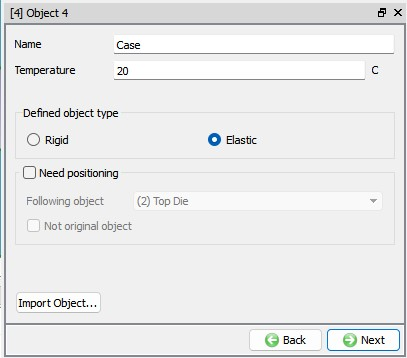
Case object page
Click  and import geometry “gear_die_case_SI.STL” from library.
and import geometry “gear_die_case_SI.STL” from library.
Click  and generate mesh with 50,000 elements.
and generate mesh with 50,000 elements.
Force interpolation is not required. Click  and assign AISI-H-13 material.
and assign AISI-H-13 material.
Click  and assign Vy=0 to bottom face as shown in Fig. L12.17.
and assign Vy=0 to bottom face as shown in Fig. L12.17.
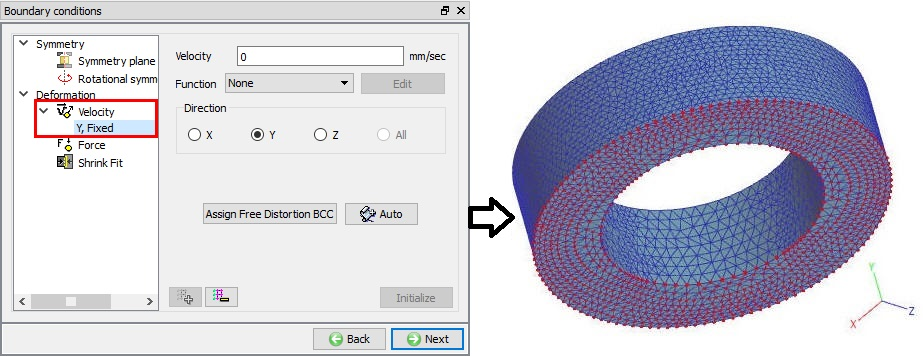
Fix the bottom face velocity in Y direction
Apply a 0.508’’ interference (per side) Shrink Fit to ID in Y direction
- vector is in the Y direction as shown in Fig. L12.18.
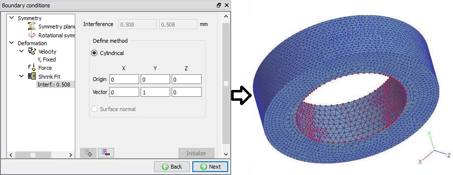
Shrink fit to the internal dia of the shrink ring perpendicular to the axis Y direction
When you perform a shrink fit, DEFORM will ask if you would like the nodes of the case to be offset by the same amount as the shrink fit tolerance (see Fig. L12.19.). Most of the time, as it is in this lab, you will position your tooling to make contact and then apply the shrink fit. In this case you want to answer no. This will prevent the nodes from being displaced. If you import your tooling geometry in such a way that the interference is shown by a overlap between the die and case then clicking yes is the correct option and will displace the nodes of the case so contact can be defined.
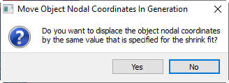
Move object nodal coordinates popup for Shrink BCC
- No variable initialization is required and objects are correctly positioned, so click on Contact branch in operation tree to generate contact between bottom die and shrink ring.
Click on  button, select Maser as Case object and Slave as Bottom Die object. Define friction value as 0.08.
button, select Maser as Case object and Slave as Bottom Die object. Define friction value as 0.08.
Click on  to generate contact. (See Fig. L12.20.)
to generate contact. (See Fig. L12.20.)
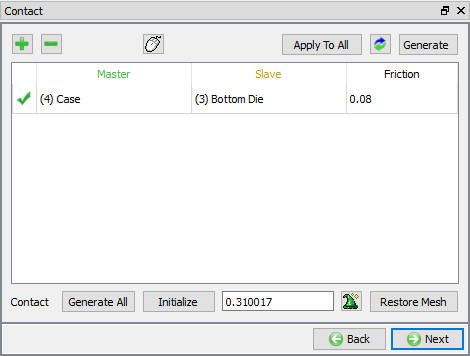
Inter-object relations window
- Click  and Change the number of simulation steps to 5 steps and save every 5.
and Change the number of simulation steps to 5 steps and save every 5.
- Click  and write database.
and write database.
- Click on  mode button and run simulation.
mode button and run simulation.
- After simulation click on to enter the postprocessor and compare the stress values at the stress concentration on the bottom die between load cases with the ring and without a shrink ring (Lab 12 results) as shown in Fig. L12.21. and Fig. L12.22.
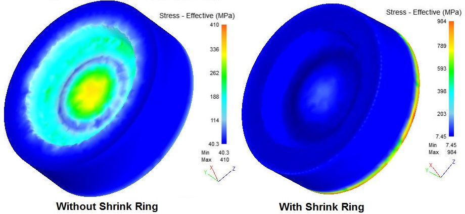
Bottom die effective stress with and without Shrink ring
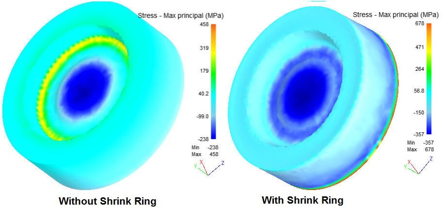
Bottom die maximum principal stress with and without Shrink ring